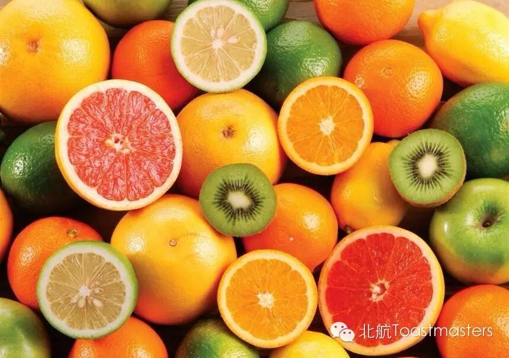
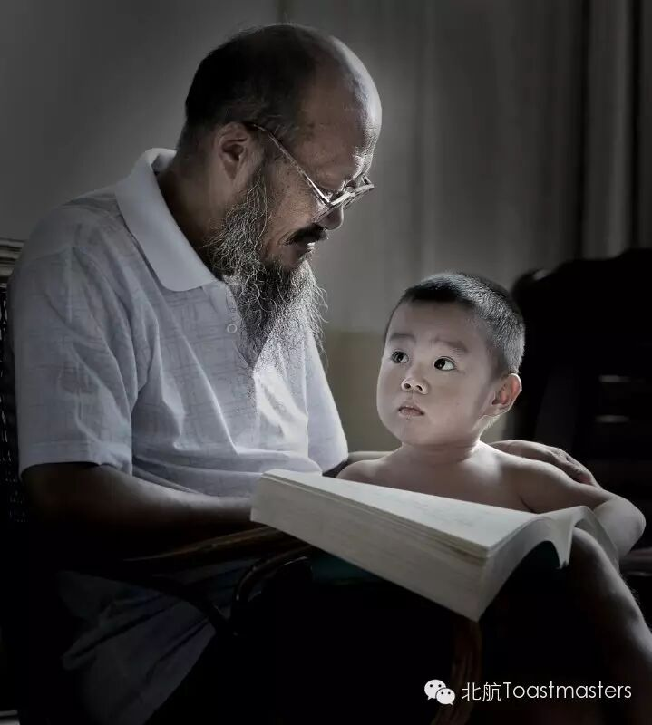

Beihang TMC 111th Meeting
Time: 19:30-21:30,Friday,September,18
Venue:Room F228,New Main Building,Beihang UniversityHearing this word, what would you thinkabout?
Ah ha, I believe everybody in this world isfamiliar with this word, especially students. From kindergarten to college,even after work, the exam seems to always be with you. Can you compute how manyexams you have taken? And how many will you take in the left of your life? Didyou still remember the last exam you have taken? Who is the one sitting nearyou? Which exam is the most unforgettable? Have you ever failed an exam?
People also tell me that life is like anexam without eraser. If you don t study well, you fail. It seems that everybodyis in a big exam. As a student in life, you must have many experience to sharewith us. Don’t be shy! Just come!

Yes, I must go on a diet! I really, really must!
I know it’s hip, this losing weight, to join a gym and such…
But exercise, I’d simply hate, as I don’t like it much…
This poem says most girls’ voices. To lose weight, people, especially ladies, choose to go on a diet. But the results are mostly not satisfactory.
Lucky! We have an experienced teacher Rita who can tell you why and teach you what a healthy and effective diet is.
Good news for girls! Good news for boys’ girlfriends! Good news for boys’ future girlfriends!

All the primary school teachers would let their students write at least one composition with the topic of my most memorable person. Many students will describe their grandparents. They told us many fairy tales. They bought us sweet candies. They brought us a colorful world with the humble little thing, like a piece of paper, a leaf or a piece of wood. You must have many sweet memories with grandparents. Let’s listen to the story of Bowen with his grandpa.